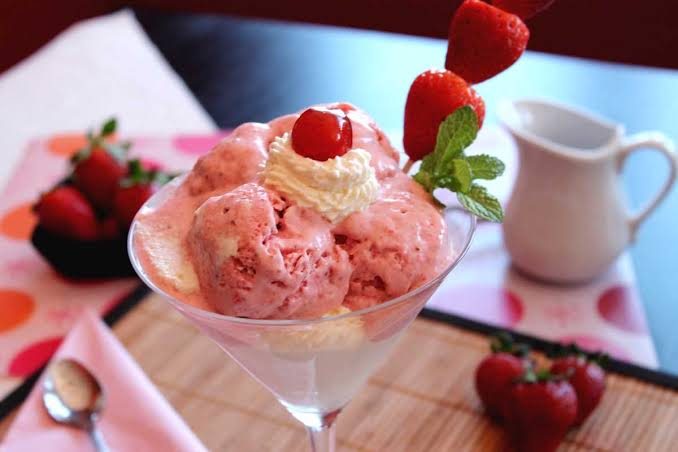

HELADO DE FRESA

El helado de fresa es ese clásico dulce y refrescante que combina
la cremosidad suave de la leche con el toque vibrante, frutal
y ligeramente ácido de las fresas maduras. Tiene un color rosa tierno que ya antoja a simple vista,
y cada cucharada mezcla frescura,
dulzura equilibrada y pequeños trozos de fruta que alegran cualquier tarde.